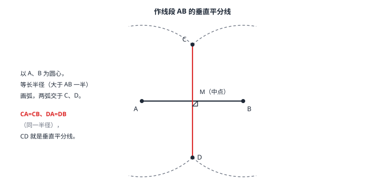

尺规作图
只用没有刻度的直尺和圆规作图。五种基本作图：作等于已知线段的线段、作等于已知角的角、作角平分线、作线段的垂直平分线、过一点作已知直线的垂线。作图的本质是「找点」：两组条件各对应一条圆弧或直线，交点即所求。
| 所属主题 | 图形的初步认识 |
|---|---|
| 所属模块 | 几何 |
| 课标学段 | 第四学段（7~9 年级） |
| 前置知识 | 直线、射线、线段、角与角平分线、相交线与平行线 |
| 核心素养 | 几何直观推理能力 |
教材定位
人民教育出版社《人教版（2024版）义务教育教科书·数学》
七年级上册第6章 几何图形初步6.2 直线、射线、线段6.3 角
五种基本作图分散在七上 6.2、6.3 与七下 7.4 平移之中，教材未单列作图章。本篇把五种基本作图集中成完整体系，并说明「作图即找点」的本质。
说明
尺规作图的「尺」是没有刻度的直尺——只能用来连直线、延长线段，不能量长度；「规」是圆规——能以任意点为圆心、任意跨距为半径画圆或弧，跨距就是「复制长度」的唯一手段。五种基本作图是一切作图题的零件：作一条线段等于已知线段；作一个角等于已知角；作角平分线；作线段的垂直平分线；过一点作已知直线的垂线。
作图题的答题格式四段：已知（给定的线段、角）、求作（要作的图形及其要求）、作法（按顺序逐步写动作，每步一个动词：作、画、连）、痕迹（弧线必须保留，不许擦）。大题的得分点一半在痕迹上——弧是步骤的证据。
使用场景
实际放线与等距定位：只有两卷等长皮尺时找基线中点、放垂直方向，用的正是垂直平分线的作法——两个等距点的连线。等腰结构的安装、对称图案的设计，先作图后施工。
精确等分与复制：没有量角器时把角二等分、四等分；把一条线段四等分——都是把「等分」翻译成几次基本作图的串联。
注意点
作垂直平分线时半径必须大于线段一半，否则两弧不相交或只有一个交点，作不出两个等距点。半径大一点，交角舒展、交点清晰，误差更小。
作法里禁止出现「量出 3 厘米」这类话——直尺没有刻度，长度只能由圆规的跨距复制。作完必须保留全部弧线；擦掉痕迹的作图题等于只交了答案没交过程。
证明

图 1：作线段 AB 的垂直平分线。以 A、B 为圆心、等长半径（大于 AB 的一半）画弧，交于 C、D，连线 CD 即垂直平分线，M 为中点
证明
结论 1尺规作图的一切题目最终都归结为找点。
尺规能干的事只有两件：直尺过两点连直线（两点确定一条直线）；圆规以定点为圆心、定长为半径画弧（弧上所有点到圆心的距离都等于这个半径）。所以一切作图题都归结为「找点」：让一个点同时满足两组条件，每组条件对应一条弧或一条线，交点就是所求的点。（图 1 中的 C、D 就是两条弧交出的点）
关键一步依据是尺规两种工具各自提供一类约束：直尺给出「过两点」这一类，弧给出「到圆心距离等于半径」这一类。一个点要同时满足两组条件，就只能是这两条线（或弧）的交点——所以作图题真正要设计的是让某个点同时挂上两组条件。
结论 2作线段 AB 的垂直平分线，原理是找出两个到 A、B 都等距的点再连起来。
作线段垂直平分线的原理：以 A、B 为圆心、同一条半径画弧，交点 C 满足 CA=CB（同一条半径），交点 D 满足 DA=DB。C、D 都到 A、B 等距，由两点确定一条直线，连线 CD 就是所求。它能垂直平分 AB 的严格证明（到线段两端等距的点都在垂直平分线上）需要三角形全等的知识，等学了 全等三角形 再回看；现在先靠「两个等距点定一条对称轴」的直观确认。
关键一步两步的依据分别是：同一条半径保证 CA=CB、DA=DB（弧上点到圆心的距离都等于这个半径），两点确定一条直线保证 CD 唯一。注意「到线段两端等距的点都在垂直平分线上」这条严格依据要用到三角形全等，这里提前借用后面 全等三角形 的结论，现在先靠「两个等距点定一条对称轴」的直观确认。
结论 3作一个角等于已知角，原理是把已知角的三边用同一组跨距复制到新位置。
作角等于已知角的原理：用同一组跨距把角「三边复制」——OM=O′M′、ON=O′N′（同一半径的弧），MN=M′N′（同一跨距截取）。三条线段对应相等，两个三角形全等，于是 ∠O=∠O′。全等的严格依据同样等学了 全等三角形 再补。
关键一步依据是圆规的两种用法各管一条边：同一半径的弧复制 OM、ON 两边，同一跨距截取复制 MN 底边，三条线段一一对应相等才能让两个三角形全等、进而 ∠O=∠O′。这里用到的全等判定是提前借用后面 全等三角形 的内容，严格依据等学了 全等三角形 再补。
结论 4过直线外一点 P 作垂线，可以拆成「截等距两点」加「作垂直平分线」两步完成。
过直线外一点 P 作垂线的原理：以 P 为圆心画弧，在直线上截出两点 M、N（PM=PN），再作 MN 的垂直平分线——垂直平分线过 P 且垂直于已知直线。这一步把「作垂线」拆成了「截等距两点 + 作垂直平分线」的串联，是复合作图的样板。
关键一步依据是「到线段两端等距的点都在垂直平分线上」这条性质：PM=PN 说明 P 到 M、N 等距，所以 P 在 MN 的垂直平分线上；而垂直平分线又垂直于 MN，MN 就在已知直线上，于是这条线既过 P 又垂直于已知直线，两个要求同时满足。
动手实验
用圆规复制一个角：画 ∠AOB，按作法作出 ∠A′O′B′，再用量角器量两个角，差不超过 1°（作图误差）；换一个钝角再试。对折一张纸条找出印痕的中点，展开后用圆规作同一条印痕的垂直平分线——折痕与作图线应当重合，因为「对折重合」与「等距交点」说的是同一件事。
解题思路
拿到作图题先拆动作：要作的图形由哪些「点」决定？每个点要满足哪些条件？每个条件用哪种基本作图实现？例如「过点 P 作已知直线的垂线」＝以 P 为圆心截出等距两点 + 作这条连线段的垂直平分线，两个基本动作串联。
写作法用动词开头、一步一事：「以 A 为圆心、以 AB 长为半径画弧」「连接 CD」；半径不具体写数字，写「大于 AB 的一半」这类要求。等分问题用「逐次减半」：角四等分＝两次作角平分线；线段四等分＝两次作垂直平分线（先得中点，再各取半段的中点）。作完自查三件事：痕迹在不在、半径交代没交代、求作与作法是否对得上。
按场景的例题
例 1（场景：测量与工程） 工地放线找中点
工地上有一条 12 米长的基线 AB，只有两卷足够长的等长皮尺。如何定出 AB 的中点和垂直方向？
解：两人各执 A、B 一端，皮尺取同一长度（大于 6 米，如 8 米），从 A、B 两端拉出，交出点 P——PA=PB；换一个方向再交出点 Q——QA=QB。连接 P、Q，这条线就是 AB 的垂直平分线：与 AB 的交点 M 是中点，方向垂直于 AB。与尺规作图完全同构——皮尺充当圆规的半径。
答：两次「等长交点」定出 P、Q，连线即垂直平分线，过 AB 得中点。
例 2（场景：图形设计） 装饰图样的等分角
装饰图样要把一个 70° 的角四等分，手上只有直尺和圆规。怎样完成？每份是多少度？
解：两次作角平分线：第一次对 70° 作角平分线，得到 35°+35°；第二次对其中一个 35° 再作角平分线，得到 17.5°。四份各 17.5°。验算：17.5×4=70，恰好还原原角。
答：两次作角平分线，每份 17.5°。
例 3（场景：竞技与游戏） 作图擂台的四等分线段
作图擂台要求：只用圆规（最后允许用直尺连线）把线段 AB 分成四等份。写出作法。
解：第一步：作 AB 的垂直平分线，与 AB 交于点 M——M 是中点（AM=MB）。第二步：分别对 AM、MB 作垂直平分线，与 AM 交于点 N、与 MB 交于点 P。N、P 是两个半段的中点，于是 A、N、M、P、B 把 AB 分成相等的四段，每段是 AB 的四分之一。
答：三次作垂直平分线（整段一次、两个半段各一次），得四等分点。
常用推论
圆规是「等距复制机」：同一跨距的弧上所有点到圆心等距——垂直平分线、角平分线、等长线段全都靠这个性质「找点」。
作垂直平分线的半径条件是大于线段一半；过直线外一点作垂线 = 截等距两点 + 作垂直平分线的串联。
角与线段的等分用「逐次减半」：四等分就是两次平分，八等分就是三次。
易错点
错作垂直平分线时把半径取成线段的一半。
为什么错半径恰为一半时两弧只在一点相切，取更小则不相交，都得不到两个交点。
正确半径必须大于线段的一半，让两弧交出两个点。
错作法里写「用尺子量出 3 厘米，再以 3 厘米画弧」。
为什么错尺规作图的直尺没有刻度；长度只能用圆规跨距复制，写具体数字违反规则。
正确写成「以 A 为圆心、以跨距 AB 为半径画弧」。
错作完图把弧线擦掉，只留结果线。
为什么错作图题考查过程，弧线是每一步的证据；擦掉等于只交答案不交过程。
正确保留全部作图痕迹，交卷前检查弧线是否完整。
直观理解
把尺规想成两台机器：直尺是「两点连线机」，圆规是「等距复制机」。任何作图题的算法都是：把「要作的图形」翻译成「几个待找的点」，每个点翻译成「两组条件」，每 组条件对应一条弧或一条线，交点落地，任务完成。所以作图题的本质是解方程——用交点解方程，图上的方程。